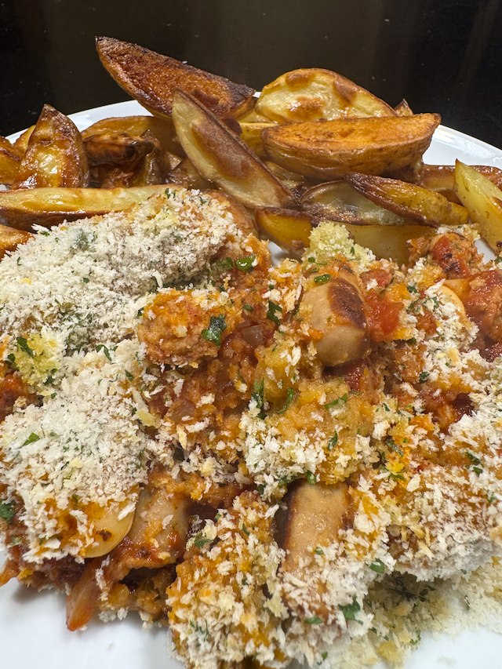

Sausage and Butterbean Casserole

From BBC Food by Tom Kitchen Serve with chunky chips and broccoli.
Ingredients
- 2 pack sausage
- 1 onion, diced
- 1 garlic clove, thinly sliced
- 1 tsp dried mixed herbs
- 1 400g tin butter beans, rinsed and drained
- handful parsley, chopped
- 2 400g tin tomatoes, chopped
- ½ tsp sugar
- 1 chicken stock pot
- salt and pepper
- Topping
- 180g panko breadcrumbs
- handful parsley, chopped
- olive oil
Method
Cook sausages. Heat a large frying pan to hot. Add the sausage and fry for a couple of min. Shake the pan and turn heat down to medium. You are aiming for a slow cook, where gunk form on the bottom of the pan, about 20 minutes. Watch the pan - you don't want to burn the gunk.
Make the sauce. Cook the onions on a low heat to soften, about 15 min. Then add the garlic and herbs and cook for a couple of min. Then add the tomatoes, beans, parsley and stock cube. Increase the heat to medium and cook on a slow bubble until the sausage are ready. Cut the sausage into the pan with scissors. Deglaze the sausage pan with water, and add to the sauce. Add a bit more water to the sauce if you feel it needs it. Taste for salt.
Assemble. Mix the breadcrumbs with the parsley. Tip the sauce into an oven proof dish. Top with the breadcrumbs and drizzle with olive oil. Cook in oven on 180°C fan for 25 min.